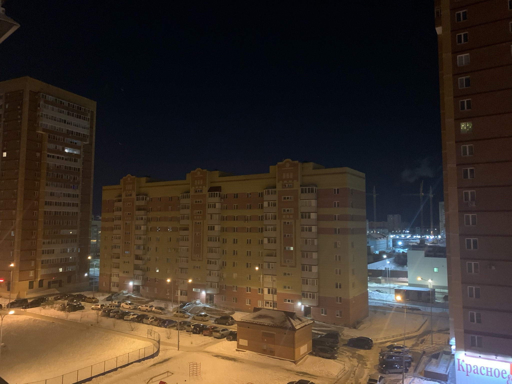

День 5 | 16.03.21
"Я сижу один и встречаю рассвет, мои мысли уносит дым сигарет. Наш мир так сложно устроен, задаю вопрос, не всегда получаю ответ. Кто хочет обмануть? А кто мой друг? Так сложно понять, когда вокруг все врут"
Время 4:15. Я вот подумал, как я буду играть дальше в Fallout, если раньше я играл с Кристиной только, это же всегда будет напоминать мне о плохих эмоциях, что делать... Я люблю Fallout, но эти плохие ассоциации будут портить все впечатление от игры.
Думаю нужно заняться функционалом сайта этого, придумать что-то новое. Хочу крч добавить регистрацию пользователей, чтоб можно было оставлять комментарии к моим мыслям, это будет сложно, а может и нет, я же не в курсе как это делать))
Почему у меня так хорошо получается отталкивать людей от себя? Я постоянно это делаю, а потом жалею об этом, но уже нельзя ничего вернуть. Интересно, что со мной не так, наверное, я слишком много думаю о всяком, выдумываю много лишнего, потом это терзает меня, не могу избавиться от этого.
Слушаю песню и мне нравится текст, сейчас напишу его: "Я запутался в себе, нету крыльев ну а вдруг, я без них смогу взлететь, моя тень - мой новый друг. Мои мысли ни о ком, мои треки ни о чем, мои ноги на краю, две секунды, я взлечу". Ладно, пойду делать кофе, держу в курсе.

День 4 | 15.03.21
"Пачка сигарет никогда не закончится, бросить курить, если честно, не хочется. Стены так давят меня в этой комнате, белый потолок, засыпаю в холоде, открытые окна, в них дует ветер, я не закрывал их, я жду тепла. Мои друзья — это мои сигареты, мы с ними никогда не расстанемся"
Давно я не чувствовал этих эмоций, хотя раньше они были со мной каждый день. Наш корабль идет ко дну, помоги мне я утону, протяни мне свою ладонь. Я же обязан здесь писать свои мысли, какие бы они не были. Сейчас я чувствую пустоту, нет аппетита, нет желания что-либо делать, но в этом случае, я понимаю, что я обязан "вернуться" обратно.
Сегодня я курю намного больше, чем обычно, если раньше было 1-2 сигареты за 4-5 дней, то сейчас уже 5 сигарет в этот день и курю я просто в комнате... Мне так плевать что думают про меня другие люди, типа я такой депрессивный и суицидальный.
Представьте просто: темный космос и свет теплый звезд в расфокусе. Недавно был большой взрыв и родились мы с тобою, как будто при параде планет мы встали быстро в ровень, можно даже сказать, что так мы практически сблизились, что такое в космосе пара астрономических единиц? Но спутники наши твердят: "К сожалению, вы не пара, вам даже не позвонить друг другу..."
День 1 | 12.03.21
"Порой случается так, что ты все потерял и тебе совсем
некуда идти. Подводят лишь те, кому всегда доверял и
все, что было, осталось позади. Закрутится, завертится
мир, перевернется все вокруг. Кто мой враг, а кто мой
друг?"
Сегодня первый день, как я решил начать вставать в
4 утра. Встал, на удивление, легко. Было очень
интересно какого это вставать так рано.
Умылся, позавтракал, занимался проектом и встретил
рассвет под музыку. Было красиво. Не знаю для кого
я делаю этот сайт, кто его будет читать... Но суть
в том, что мне становится легче, когда я делюсь
своими мыслями, но я еще не нашел такого человека,
которому я могу рассказать все, что происходит в моей
голове, наверное, это отпугнет или что-то типа того.
Зачем я поставил аву
Ксюши с Telegram?
Без понятия, мне просто захотелось, но скорее всего я сам
себе вру сейчас, просто не хочу признавать настоящей
причины.